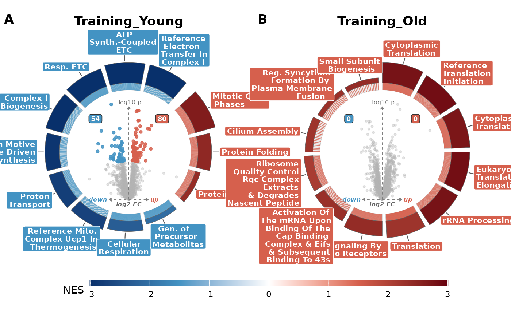

Compose a grid of volcano_ring() plots, one per contrast
Source: R/volcano_ring_grid.R
volcano_ring_grid.RdCompose a grid of volcano_ring() plots, one per contrast
Usage
volcano_ring_grid(
volc_dfs,
enrichment,
contrasts = NULL,
subtitles = NULL,
nrow = NULL,
ncol = NULL,
tag_levels = "A",
guides = "collect",
panel_spacing = 1.5,
panel_margin = 2,
label_headroom = 1.1,
legend_position = c("bottom", "right", "none"),
legend_width = 26,
...
)Arguments
- volc_dfs
DA results from
as_da()covering the contrasts drawn. A named list of plain tables, or one with acontrastcolumn, still works but is deprecated.- enrichment
An enrichment object holding every contrast drawn.
- contrasts
Character vector of contrast names to include and the order in which to draw them. Defaults to
names(volc_dfs).- subtitles
Optional per-ring subtitles. Either a vector parallel to
contrasts, or a vector named by contrast.NULLdraws no subtitles.- nrow, ncol
Outer layout dims; forwarded to
patchwork::wrap_plots().- tag_levels
Panel-tag scheme; forwarded to
patchwork::plot_annotation().- guides
Patchwork
guidesargument; default"collect"collects the shared score legend.- panel_spacing
Gutter between adjacent panels, in millimetres (default 1.5). Applied as half on each panel edge, so neighbours sit
panel_spacingapart. Lower it to pack rings closer.- panel_margin
Outer margin around the whole grid, in millimetres (default 2). Trims the dead frame around the assembled figure.
- label_headroom
Radial room reserved for pathway labels inside each panel (default 1.1, looser than the single-ring default of 0.5 so wide boxes stay enclosed when panels are packed tight). Forwarded to
volcano_ring(); raise it if labels clip, lower it to enlarge the rings.- legend_position
Placement of the collected score legend:
"bottom"(default, recovers the right-hand gap),"right", or"none".- legend_width
Length of the score colourbar long axis, in millimetres (default 26, tuned for the bottom bar). Sets the key width when the legend is horizontal, the key height when vertical; a side legend usually wants a larger value (~40).
- ...
Forwarded to each
volcano_ring()call (e.g.databases,n_terms,padj_col,theme).
Value
An S3 object c("volcano_ring_grid", "list") with elements
$plot (patchwork) and $data (list of list(volc, enrich) pairs, where
enrich is that contrast's rows of enrichment@results).
Examples
da <- example_study("yvo")$da
#> 2103 of 2106 accessions mapped to Homo sapiens symbols.
#> 2106 of 2106 matrix proteins have DA results.
ex <- as_enrichment(read.csv(system.file("extdata", "examples", "yvo_fgsea.csv.gz",
package = "enrichVolcano"
)))
#> Reading "fgsea" results.
g <- volcano_ring_grid(da, ex, contrasts = c("Training_Young", "Training_Old"))
g$plot
